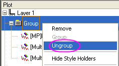
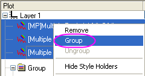

Das untere Bedienfeld des Dialogs Diagrammeinstellungen listet die Zeichnungen in dem Diagramm auf. Verwenden Sie die Bedienelemente, um die Datenzeichnungen hinzuzufügen, zu entfernen oder zu ersetzen, bearbeiten Sie den Anzeigebereich der Zeichnung; gruppieren oder lösen Sie die Gruppierung der Datenzeichnungen; ordnen Sie die Datenzeichnungen neu.
Inhalt |
Nach der Auswahl der Datenspalten im mittleren Bedienfeld können Sie einen Layer im unteren Bereich auswählen und dann auf die Schaltfläche Hinzufügen klicken, um die Datenzeichnungen in den Layer einzufügen.
Um eine bestehende Zeichnung zu ersetzen:
|
Hinweis: Falls das ausgewählte Diagramm mit anderen Diagrammen gruppiert ist, wird der Diagrammtyp für alle Diagramme dieser Gruppe geändert, aber nicht die Änderungen der Zuordnung. |
Im unteren Bedienfeld des Dialogs Diagrammeinstellungen können Sie den Anzeigebereich einer Datenzeichnung ändern:
Origin ermöglicht es Ihnen ebenfalls, einen Bereich auf alle Datenzeichnungen des aktuellen Layers oder der aktuellen Seite unter Verwendung desselben Kontextmenüs anzuwenden.
Sie können Datenzeichnungen mit Hilfe des Dialogs Diagrammeinstellungen manuell gruppieren oder Gruppierungen aufheben.
|  |  |
| Gruppierung aufheben | Gruppieren |
Sie können die Liste durch Ziehen an den Zeichnungen neu ordnen.
Klicken Sie auf die Schaltfläche Vorschau. Der Dialog Vorschau wird geöffnet und zeigt die aktuellen Zeichnungen im Diagramm und die verwendete Vorlage.
Bitte beachten Sie, dass nur dann, wenn Sie zum Zeichnen von Diagrammen die benutzerdefinierten Diagrammvorlagen verwenden, die in der Vorlagenbibliothek gespeichert sind, das Vorlagenbild und das Kontrollkästchen Nur aktiven Layer zeigen im Dialog Vorschau gezeigt werden.
Bei aktiviertem Kontrollkästchen Nur aktiven Layer zeigen können Sie zwischen den Layern wechseln, indem Sie auf das Layersymbol links oben im Feld Vorschau klicken. Wenn Sie zwischen den Layern wechseln, gibt das Feld der Vorlage die Änderungen wider.